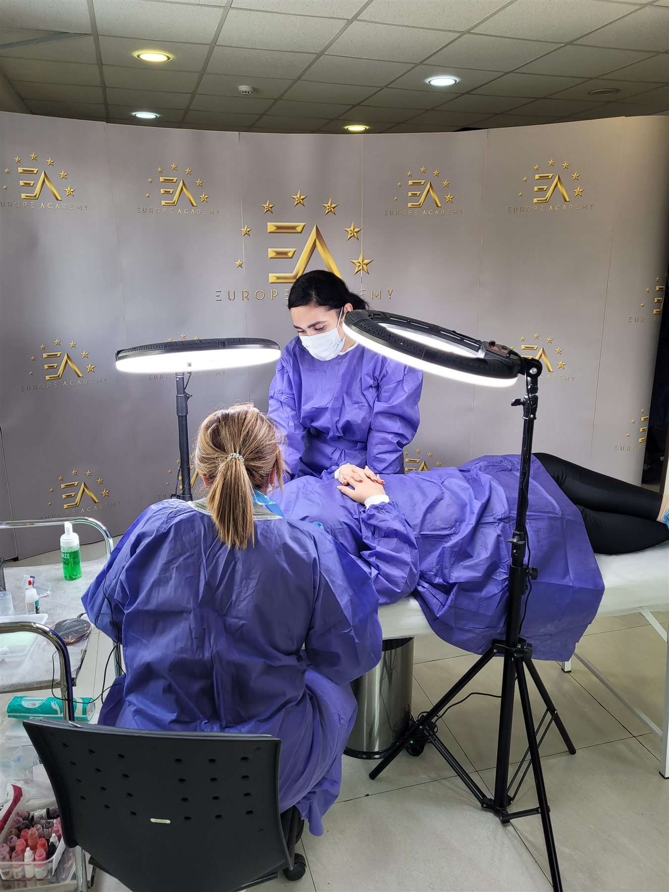
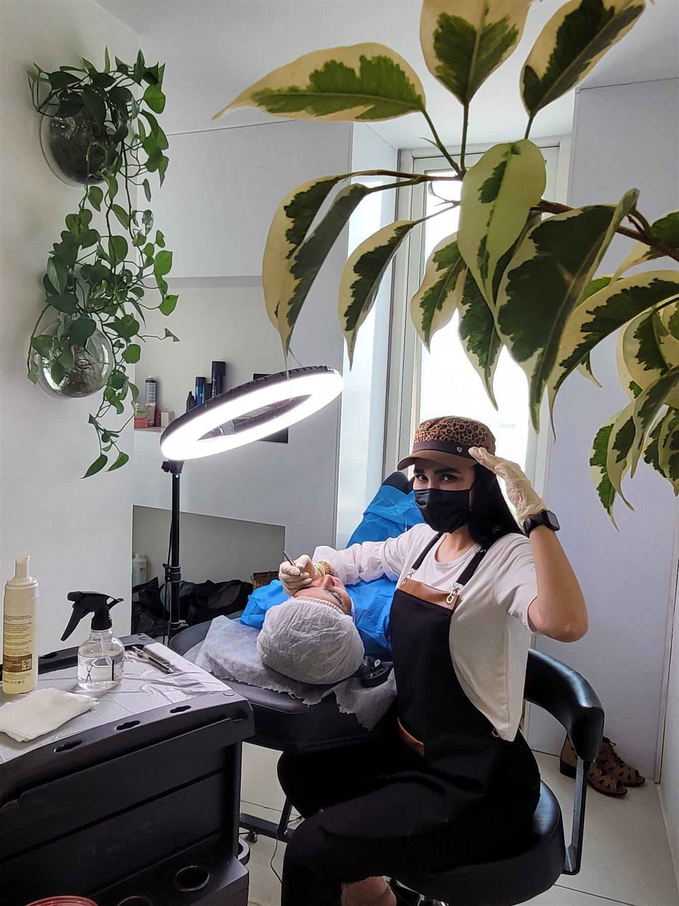

PMU MASTER ARTIST
هنر، مهارت
و نگاه جهانی
من لنا بحری هستم؛ مدرس تخصصی و مستر آرتیست آرایش دائم در شیراز. مسیر حرفهای من بر پایه طراحی اختصاصی، شناخت چهره، اجرای ایمن و یادگیری مستمر شکل گرفته است. هدفم نتیجهای است که در عین ظرافت، هویت طبیعی هر چهره را حفظ کند.
01رتبه اول WULOP 2024
02رتبه دوم هیراستروک
PMUآموزش تخصصی و حرفهای
WULOP 2024
دو مقام، یک مسیر
پیوسته برای بهترشدن
کسب مقام اول در لاین Eyebrow Shading و مقام دوم در لاین Hairstrokes with Device در رقابت WULOP 2024.
01مقام اول
Eyebrow Shading
Eyebrow Shading
02مقام دوم
Hairstrokes
Hairstrokes
HALL OF HONORS
تالار افتخارات
مقامها، مدارک تخصصی و لحظههای مهم مسیر حرفهای؛ برای دیدن نسخه کامل هر تصویر، قاب را انتخاب کنید.
PROFESSIONAL CONNECTIONS
رویدادها و دیدارهای حرفهای
حضور در فضای حرفهای آرایش دائم و ارتباط با چهرهها و متخصصان این حوزه.

PROFESSIONAL STANDARD
ظرافت، در کنار
استاندارد حرفهای
تمام مراحل اجرا با توجه به اصول بهداشتی، ابزار تخصصی و طراحی دقیق پیش از شروع انجام میشود.
رزرو مشاوره